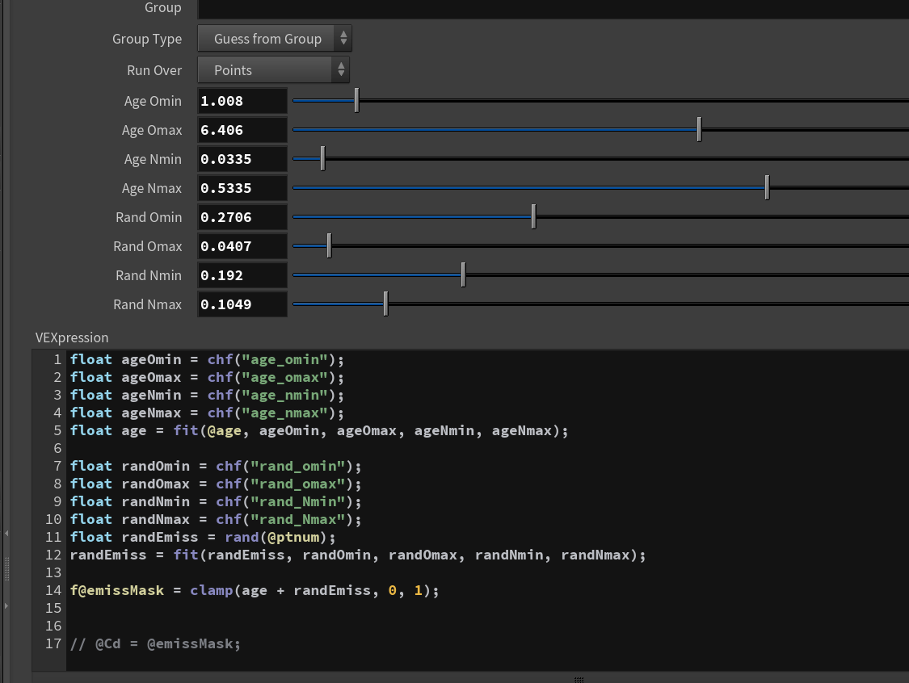

Week7
Team Member
Yiqi Zheng (Fx)
Riley Ho (Fx)
Itim Kongsakulvatanasook (Fx)
Sofia Mancias (Compositing)
Feb 23
Benji Hopkins (Look Dev)
SCAD X HARBOR X ETC - Week 7
Hello, this is my seventh week of the Scad x Harbor x ETC blog!
These are the mentors' feedback from Tuesday's presentation.
Kyle:
-
Particles are inconsistent across shots
-
The effects happening to the ground can be much brighter around the printer shot 1
-
Grade particles so they are less overexposed, the color is blown out rn in shot 1
-
Shot 3 light change looks good, keep that lighting through the shot
-
We don’t need the objects in shot 4, focus on beginning shots first
Beck：
-
Avoid key framing anything, try using time or age to differentiate pscale
-
You can use pscale based on camera frustrum, maybe in a wrangle
-
The particle color in shot 3 don’t match with the painting, it is very red in the middle right now
-
The disappearing particles seem to happen twice- feels strange
To-Do List:
-
Refine the particles’ path and flow shape (Create noise)
-
Denoise shot 1
-
Avoid the overexposure.
This is our Previs for week 7.
For Shot 2, we need to extend the duration, as it currently feels too fast. Some of the color flows also appear flat, so we need to explore additional variations.
Another key development this week was increasing the particle count in my simulation, which significantly increased the file size. Following Professor Fowler’s advice, I explored exporting USD at the OBJ level and using referencing workflows. After writing out the USD files and referencing them, the scene performance improved substantially.
Also, for shot 2, I explore more about the smoothness of the particles flows. But some flows look flat.


And for shot 1, Itim helps with to create vex, so we can create the variant through the age and velosity.



I also scale the velocity of the particles, so I can control the speed, intensity, and overall motion of the simulation.
Because I really wanted the particles to have more variation, Riley shared this wrangle with me. It calculates the distance between each particle and the camera, then uses that distance together with some random variation to control the particle pscale (size). This helps the particles maintain a more consistent screen size while adding natural size variation, so they look more balanced and visually natural in the scene.